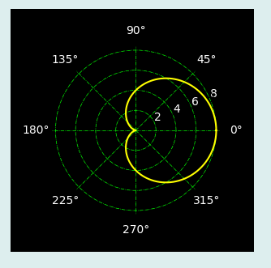

PlotBar二维曲线控件主要用于显示极坐标形式的二维曲线，其图形显示效果如下：

在Python程序GUI界面中创建一个PlotPolar二维曲线控件的命令为:
hl=dr.DRPlotPolarX(win,x,y,w,h,title,cb1,cf1,cf2,cf3,title,aData,rData)
其中hl是创建时用户设定的变量名。PlotPolar二维曲线控件有2个属性函数。
hl.setValue2D(adata,rdata)#以覆盖形式绘制曲线
hl.addValue2D(adata,rdata)#以添加形式绘制曲线
PlotPolar二维曲线控件继承至Tkinter的Frame控件和Matplotlib的plotpolar函数，必要时可参阅相关资料。
.